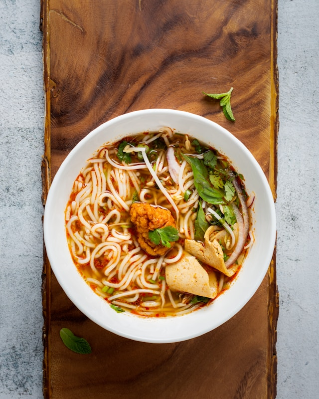

Miso Butter Ramen Noodles

Description
These quick and easy miso butter ramen noodles take cheap ramen noodles and turns them into a flavor explosion. Feel free to add chicken, shrimp, or pork for even more flavor and protein.
Ingredients
- (3 ounce) packages dry ramen noodles, seasoning packets discarded
- 3 tablespoons white miso paste
- 2 tablespoons unsalted butter, melted
- 2 tablespoons lower-sodium soy sauce, or more to taste
- 1 tablespoon seasoned rice vinegar
- 1 tablespoon chili oil (optional)
- thinly sliced green onions and sesame seeds for garnish (optional)
Steps
- CFill a pot with 5 cups of water and bring to a boil. Add ramen noodles to the boiling water, and cook until tender, 2 to 4 minutes. Drain noodles, reserving some of the noodle water in case you need to thin out the sauce later. Add drained noodles back to the pot.
- Meanwhile, whisk miso paste, butter, soy sauce, and rice vinegar together in a small bowl until smooth. Pour over the hot noodles, and stir until well combined. The hot noodles will soak up the sauce, so add some reserved cooking water if sauce needs to be thinned out.
- Evenly divide the noodles among 3 bowls. Drizzle each with chili oil and garnish with thinly sliced green onions and a sprinkle of sesame seeds before serving.
Home